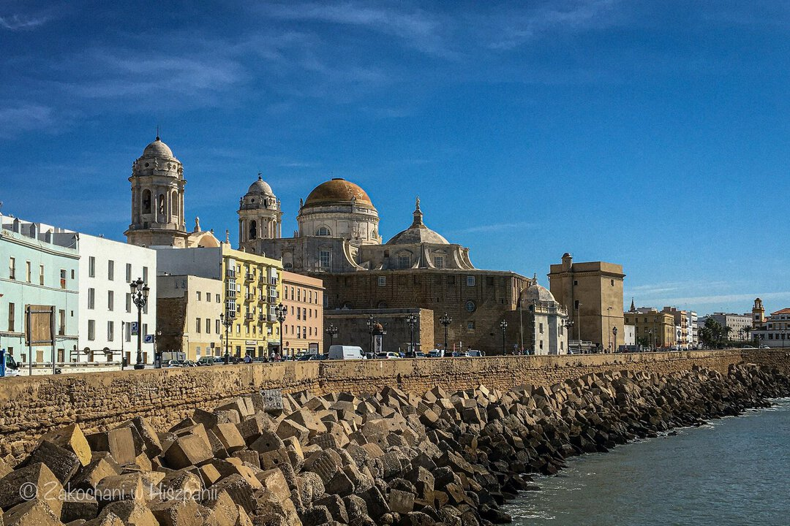

Premios Princesa de Asturias
Nagrody Księżnej Asturii

Mamy październik. Jesienna aura spowodowała, że w ubiegłym roku o tej samej porze postanowiliśmy wybrać się do Kadyksu, aby złapać trochę promieni słonecznych oraz z powodu uczestnictwa mojego Męża w konferencji programistycznej Lambda World. To właśnie w Kadyksie po raz pierwszy usłyszeliśmy o jakże ważnej nagrodzie Księżnej Asturii.

Od 1981 roku Fundacja Księżnej Asturii przyznaje nagrody, jej Honorowym prezesem do 2014 roku był obecny król Hiszpanii Filip VI Burbon. Od momentu objęcia tronu, czyli od 19. czerwca 2014 roku, jego córka Eleonora, księżniczka Asturii przejęła honorową prezydencję tej instytucji. Celem fundacji jest promowanie wartości naukowych, kulturowych i humanistycznych.
W trakcie ceremonii w Oviedo, stolicy Księstwa Asturii, w Teatrze Campoamor wręczane są statuetki, zaprojektowane przez hiszpańskiego artystę Joana Miro, oraz nagroda pieniężna w wysokości 50 tys. euro. Wyróżnienia przyznawane są w ośmiu kategoriach: sztuka, współpraca międzynarodowa, sport, komunikacja i działania na rzecz ludzkości, literatura, nauki społeczne, badania naukowe i technika, oraz zgoda między narodami.
 Prezydent Gdańska - Aleksandra Dulkiewicz
Prezydent Gdańska - Aleksandra Dulkiewicz
Podczas pobytu w Kadyksie byliśmy zaskoczeni słysząc, że nagrodę otrzymuje miasto Gdańsk. Za wrażliwość na solidarność, obronę wolności, praw człowieka i ochronę pokoju. Nagrodę odebrała Prezydent Miasta Aleksandra Dulkiewicz. Prócz miasta Gdańsk, w poprzednich latach zostało nagrodzonych kilku Polaków:
- 2001 r. - Krzysztof Penderecki - Sztuka
- 2003 r. - Ryszard Kapuściński (wspólnie z Gustavo Gutiérrez Merino) - Komunikacja i Działania na rzecz Ludzkości
- 2017 r. - Adam Zagajewski - Literatura
- 2018 r - Krzysztof Wielicki (wspólnie z Reinholdem Messnerem) - Sport
Pomimo pandemii w tym roku również były przyznawane nagrody Księżnej Asturii, dokładnie 16 października. Nagrodzeni zostali m.in. hiszpańska służba zdrowia, która miała bezpośredni kontakt z pacjentami chorymi na COVID-19. W kategorii sztuka wyróżnieni zostali Ennio Morricone i John Williams. Natomiast Carlos Sainz Cenamor, kierowca rajdowy został wyróżniony w kategorii sport.